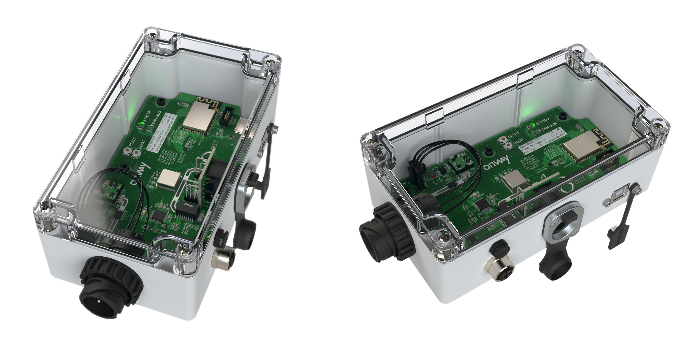

Vega Flight Computer
Control and Telemetry Systems Product
Engineered a versatile flight computer addressing the need for reliable rocketry recovery hardware. Features automatic orientation detection and a configurable Finite State Machine managing flight phases and triggering user-defined events (pyro, servo, GPIO).

Engineering Highlights
Leverages an STM32 microcontroller with advanced Kalman Filter sensor fusion for precise tracking. Implements a custom, robust 2.4GHz FHSS telemetry system for secure, long-range (10km+ tested), high-rate (10Hz) data transmission. Includes high-power outputs, configurable servo control, comprehensive onboard data logging, and streamlined configuration via a custom Electron desktop application.
Ground Station
Control and Telemetry Systems Product
Developed the companion hardware for the Vega flight computer, enabling real-time monitoring, tracking, and interaction during rocket flights.

Engineering Highlights
Features dual SX1280 radios supporting reception from two independent Vega units or diversity tracking of one. Incorporates a high-visibility transflective display, USB-C charging, onboard logging, and integrated compass/GNSS for enhanced tracking. Software enables remote event triggering for testing and immediate post-flight data review via an integrated plotter. Secure pairing with Vega units is managed via a simple "link phrase".
Parachute Reefing System for Sounding Rockets
Collaboration with ARIS
To mitigate high shock loads during parachute deployment on increasingly large research rockets for ARIS, an active reefing system was engineered. This system controls the parachute's initial opening size, allowing for a gentler full deployment at a specific altitude.

Engineering Highlights
The core mechanism involved precisely cutting a reefing line using a controlled ceramic heating element. Custom STM32-based hardware was developed to manage the heating element, process sensor data for altitude determination (using a Kalman Filter), and handle telemetry communication. Significant focus was placed on power management for long standby times in battery-operated scenarios.
Fleet Monitoring System
Collaboration with Onway AG
Developed an IoT solution for Onway AG to enable real-time monitoring of public transport vehicle fleets. The system gathers low-level vehicle data directly from the CAN bus and transmits it to a cloud backend for analysis and issue detection.

Engineering Highlights
Based on an ESP32-S2 SoC, the system features direct CAN bus interfacing, data filtering, and flexible data forwarding via Ethernet or Wi-Fi. An integrated accelerometer provides driving performance metrics. Robustness was enhanced with an onboard file system for configuration management, supporting updates via USB or Over-the-Air (OTA).